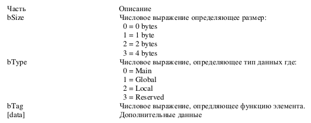

Управление
Информация о USB называется Descriptors и хранится в его ROM. Интерфейс дескриптора может определять устройство как принадлежащее к одному из конечного числа классов. Устройство HID-класса используется соответствующий драйвер для извлечения и маршрутизации всех данных.
Дескриптор устройства определяет, какие другие дескрипторы класса присутствуют. Например, Report Descriptor и Physical Descriptor.
Структура дескрипторов выглядит следующим образом:
Дескриптор устройства и конфигурации один для устройства. Дескрипторов интерфейса может быть несколько (например, в МФУ может быть интерфейс принтера, интерфейс сканера и т.д.).
Репорт дескриптор описывает каждый фрагмент данных, которые генерирует устройство, и размер данных, которые фактически изменяются. Например, определяются элементы, описывающие положение или состояния кнопки.
Дескриптор отчета загружается и обрабатывается драйвером HID класса, как только устройство обнаружено. Протоколы для существующих и новых устройств создаются путем смешивания данных внутри отчетного дескриптора.
Устройства HID делятся на классы (клавиатура, мышь, джойстик и т.д.). Это позволяет унифицировать репорт-дескрипторы. При этом некоторые классы могу содержать подклассы, например, подкласс загрузочного устройства.
Если устройство может использоваться в BIOS, то оно обозначается как загрузочное с помощью параметра
bInterfaceSubClass
0 - нет подкласса (обычное устройство);
1 - загрузочное устройство;
2-255 - зарезервировано.
Параметр bInterfaceProtocol имеет смысл в том случае, если устройство объявлено загрузочным.
0 - нет;
1 - клавиатура;
2 - мышь;
3-255 - зарезервировано.
Определять принаждежность устройства к HID классу необходимо не по параметрам bDeviceClass и bDeviceSubClass, а по параметрам bInterfaceClass и bInterfaceSubClass.
Отчетные дескрипторы состоят из элементов информации (Item).
*картинка со структурой Item*
Элемент может включать в себя дополнительный элемент данных. Размер блока данных определяется его основным типом (короткий и длинный). Для короткого объем может быть 0, 1, 2 или 4 байта. Длинный элемент имеет значение bSize = 2.
Драйвер HID парсит в линейном порядке весь репорт от хоста в поисках элементов согласно репорт-дескриптору и сохраняет их таблице элементов.
Usages
Это части отчетного дескриптора, определяют что должно быть сделано с данными (например, ввод x, y, z).
Ориентация HID
По дефолту принято направление перемещения слева направо (X), сверху вниз (Y) и издалеко ближе (Z).

Возможна передача значений за пределами допустимого, в этом случае хост проигнорирует их и текущие значения не будут изменены. Это так называемы NULL значения. Рекомендуется 0 использовать тоже как NULL, т.е. диапозон допустимых координат начинать с 1.
HID Descriptor
Определяет длину и тип подчиненных дескрипторов для устройства. Состоит из следующих частей:


Еще раз - репорт - это пакет данных с точки зрения HID. Репорт-дескриптор - это описатель структуры данного пакета. На его основе хост обрабатывает репорты от устройства и анализирует содержимое каждой посылки. Репорт-дескриптор условно делится на блоки. Первая часть блока содержит три поля: тип элемента, тэг элемента и размер элемента. Вместе эти поля определяют, какую информацию содержит блок.
Вот три типа элементов: Maain, Global, Local. Например, типу Main соответствуют следующие тэги:
Input - относится к данным устройства, например, положение курсора, состояние кнопок и т.д.
Output - определяет данные для посылки на устройство от хоста.
Feature - описывает конфигурацию устройства, которая может быть послана на устройство.
Collection - смыслова группировка элементов Input, Output и Feature.
End Collection - указывает на конец набора элементов.
Каждый тэг Main элемента определяет размер данных, возвращаемых определенным элементом управления и определяет, являются ли данные абсолютными или относительными и прочее.
Local и Global типы определяют минимальные и максимальные значения данных и так далее.
Локальные элементы описывают только поля данных, определенные следующим Main элементом. Глобальные элементы сттановятся атрибутами по умолчанию для всех последующих полей данных в этом дескрипторе.
Пример:
Report Size (3)
Report Count (2)
Input
Report Size (8)
Report Count (2)
Input
Output

Report Size (3) определяет размер элемента в битах (в данном случае 3);
Report Count (2) определяет количество таких элементов.
Если мы можем содержать и передавать данные о трех одновременно нажатых клавишах, то репорт будет следующий:
...
Report Size (8),
Report Coint (3),
...
Если репорт указывает состояние 8 кнопок, то он выглядит следующим образом:
...
Report Size (1),
Report Coint (8),
...
Отчетный дескриптор может содержать несколько Main элментов. Каждый из следующих элементов описания данных управления обязателен (остальные являются дополнительными):
Пример на основе 3-кнопочной мыши:
Usage Page (Generic Desktop), ;общая usage page
Usage (Mouse),
Collection (Application), ;открыть наборь мышь
Usage (Pointer),
Collection (Physical), ;открыть указательный набор
Usage Page (Buttons),
Usage Minimum (1),
Usage Maximum (3),
Logical Minimum (0),
Logical Maximum (1), ;поля возвращают данные от 0 до 1
Report Count (3),
Report Size (1), ;создать 3 однобитных поля (кнопки 1, 2 и 3)
Input (Data, Variable, Absolute), ;создать поле для входных отчетов
Report Count (1),
Report Size (5), ;создать 5-битное поле констант
Input (Constant), ;добавить поле во входящий отчет
Usage Page (Generic Desktop),
Usage (X),
Usage (Y),
Logical Minimum (-127),
Logical Maximum (127), ;поле возвращает значения от -127 до 127
Report Size (8),
Report Count (2), ;создать 2 поля по 8 бит (X и Y)
Input (Data, Variable, Relative), ;добавить поля во входящий отчет
End Collection, ;закрыть набор указателя
End Collection ;закрыть набор мыши
Collection открывает набор данных:
Все элементы содержат 1-байтный префикс, который определяет основной тип элемента. HID определяет 2 основных формата элементов:
- короткие 1-5 байт общей длины, используются для наиболее часто встречающихся элементов.
- длинные 3-258 байт, используются для элементов, требующих больших объемов данных.
Короткий и длинный форматы содержат размер элемента, тип и тег в первом байте.
Короткий формат


Длинный формат